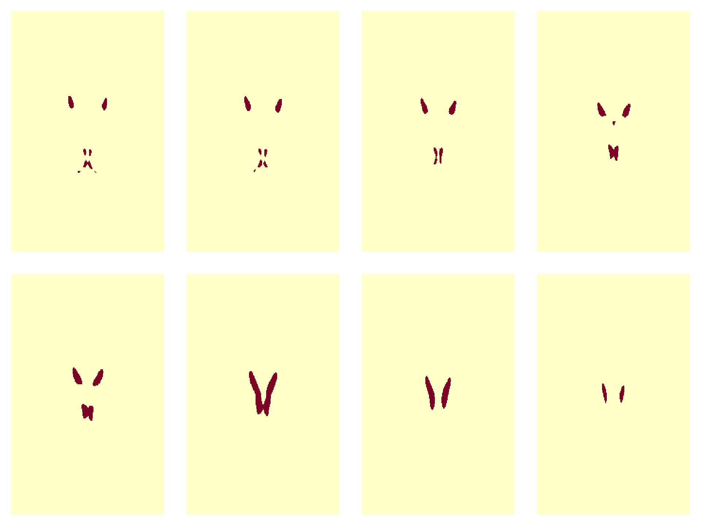
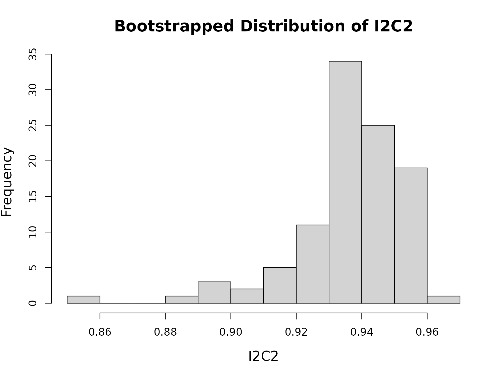
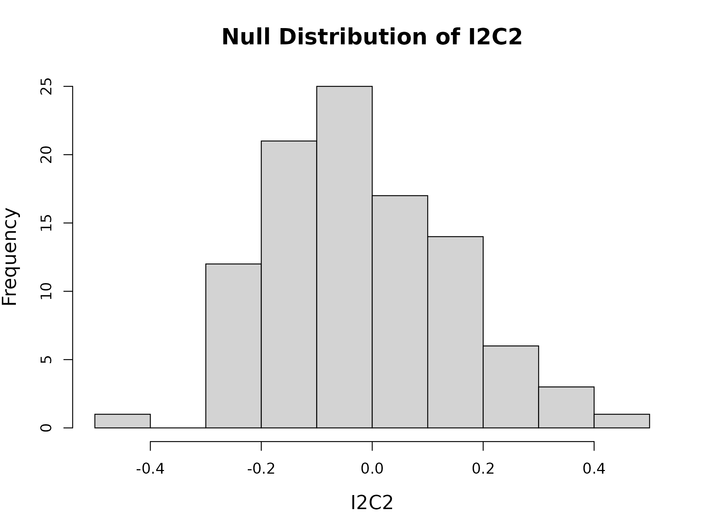
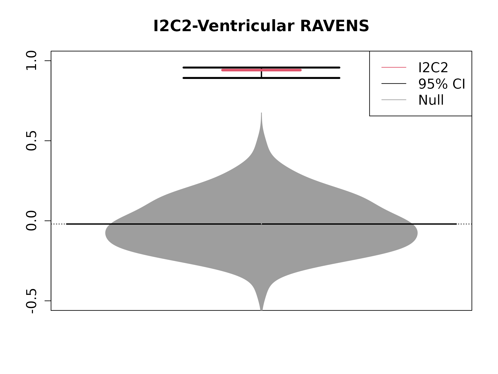

For illustration, Kirby21 ventricular RAVENS images were thresholded at sum > 15. In the main paper, sum > 1 was used. The mask file is located at I2C2::mask10.
Call the parallel package. If parallel is not installed, set ncores = 1 when computing the CI and the Null distribution (as shown in the example below).
require(parallel)
makeCluster()
library(I2C2)
opar = par(no.readonly = TRUE)
## plot a few slices of the mask
par( mfrow = c(2, 4), mar=c(1,1,1,1) )
for (j in 1:8) {
image( I2C2::mask10[ , ,75 + 3 * j] ,axes=FALSE)
}
par(opar)
# 21 subjects, xI = 21
# 2 visits per subject, xJ = 2
# ID vector: xid = rep( 1:21, each = 2 )
# Vector of visits: xvisit = rep( 1:2, (21) )
# vn: Thresholded Ventricular RAVENS Images
y = I2C2::vn10$y
id = I2C2::vn10$id
visit = I2C2::vn10$visit
#### Compute I2C2 while obtaining the computation time
system.time( vn.lambda <- I2C2(y, id = id, visit = visit, demean = TRUE) )## user system elapsed
## 0.159 0.000 0.160
vn.lambda$lambda## [1] 0.9414967
#### Computing the 95% CI of I2C2
system.time( vn.ci <- I2C2.mcCI( y, id = id, visit = visit, R = 100, rseed = 1, ncores = 1, demean = TRUE, ci = 0.95 ) )## user system elapsed
## 18.162 0.003 18.168
hist( unlist(vn.ci), main = 'Bootstrapped Distribution of I2C2',xlab='I2C2' ,cex.main=1.5,cex.lab=1.3)
#### Compute the Null Distribution of I2C2
#### For input, demeanded data were used.
system.time( vn.NullDist <- I2C2.mcNulldist( vn.lambda$demean_y, id = id, visit = visit, R = 100, rseed = 1, ncores = 1, demean = FALSE ) ) ## user system elapsed
## 14.855 0.004 14.860
#### Draw the beanplot
library(beanplot)
beanplot( data.frame(VN = vn.NullDist), border = 8, ylim = c(-0.5,1),cex.main=1.5,cex.axis=1.3, main = "I2C2-Ventricular RAVENS", ll = 0.001, col = c(8, 8, "#B2DF8A") )
lines( rep(1, 2), vn.ci$CI, col = 1, lwd = 2, lty = 1)
lines( c(0.8, 1.2), rep(vn.ci$CI[1], 2), col = 1, lty = 1, lwd = 3)
lines( c(0.8, 1.2), rep(vn.ci$CI[2], 2), col = 1, lty = 1, lwd = 3)
lines(c(0.9, 1.1), rep(vn.lambda$lambda,2), col = 2, lwd = 4, lty = 1)
legend('topright',c("I2C2","95% CI","Null"),lwd=1,cex=1.3,col=c(2,1,8))